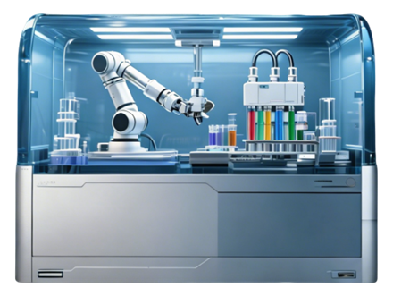

全流程自动化解决方案，推动类器官研究与药物研发标准化

类器官自动化工作站是针对生命科学领域类器官研究开发的高度整合自动化实验平台，集成样本处理、三维培养、动态观测等全实验流程功能模块，解决传统手工操作中通量低、重复性差、标准化程度不足的痛点，帮助科研机构与医药企业加速类器官模型构建、药物筛选与转化研究进程。
依托高精度液体处理、智能环境控制与机器自动化技术，KR-AutoOrg可稳定实现从干细胞诱导分化到成熟类器官收获的全周期自动化运行，满足从基础研究到中量产筛的多元应用需求。
覆盖基质胶制备、细胞接种、换液给药到终点检测的全部实验步骤，无需人工中转干预，支持24小时连续运行，提升研究效率。
全流程参数数字化记录与管控，减少手工操作带来的个体误差，保障不同批次实验结果一致性，支撑可重复的类器官研究与药物筛选实验。
支持肿瘤类器官、神经类器官、肝脏类器官等多种模型培养，可适配96孔、384孔板等培养载体，并支持定制化模块调整。
自动完成基质胶与细胞混合、接种铺板全流程操作，通过精准控温避免基质胶提前凝胶化，保障起始培养均一性。采用微米级运动控制与液滴分配系统，接种误差可控制在±2%以内。
搭载多通道移液系统与独立防污染滤芯，可同时处理多块培养板，完成多个样本的试剂更换、药物梯度加样操作，并支持按需抽吸、原位补液等模式。
集成高精度温控、湿度与气体浓度控制系统，维持37℃恒温、95%湿度、5% CO2分压稳定环境，舱内参数实时监测与自动调整。
自动存储全实验流程参数，支持实验方案编辑保存、结果数据导出与溯源查询，可对接实验室LIMS系统，满足研究数据可追溯的管理要求。
支持定时自动拍摄类器官生长过程的明场图像，可自定义拍摄间隔与区域；内置图像分析算法可统计类器官个数、大小与形态，帮助研究者获取生长动力学数据。
支持发育生物学、器官发生机制、疾病致病机理研究，可批量构建稳定的类器官模型，为发育过程与疾病发生研究提供可重复的实验体系。
基于患者来源肿瘤类器官(PDO)开展高通量药物筛选与药敏试验，帮助推进新药筛选、临床前药效评价与个性化用药方案开发。
支持规模化类器官制备，为组织修复、器官移植相关研究提供标准化培养体系，推动再生医学转化研究进程。
基于肝脏、肾脏类器官开展药物毒性评价，替代传统动物实验，提升毒性预测准确性，满足药物安全性评价需求。
我们可为不同研究方向提供定制化工作站配置方案。如需了解更多产品细节、预约演示或获取报价，欢迎联系我们的技术支持团队。